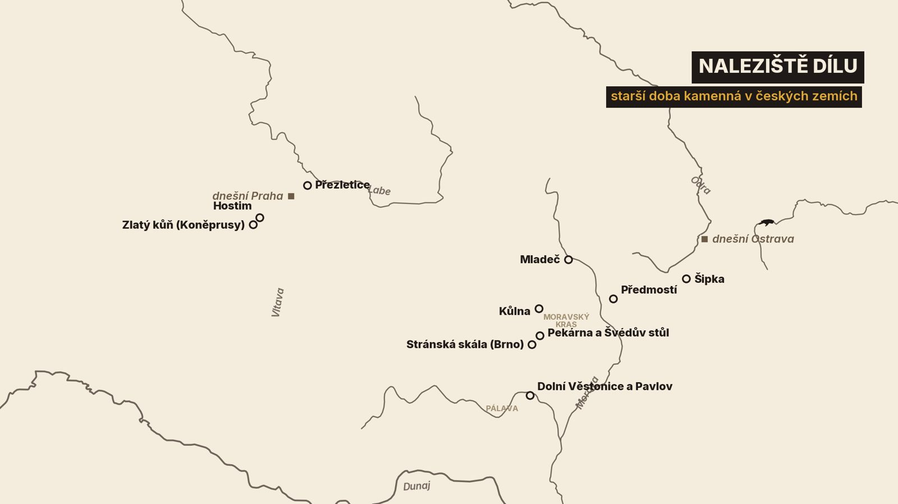
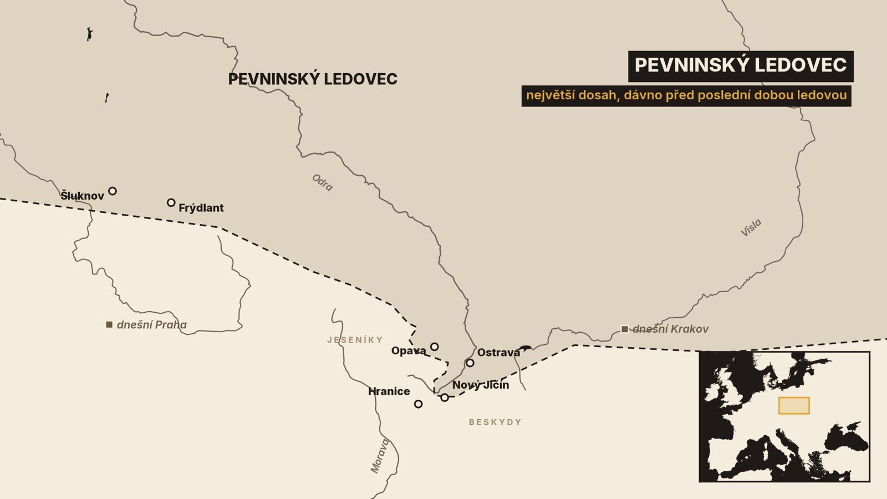
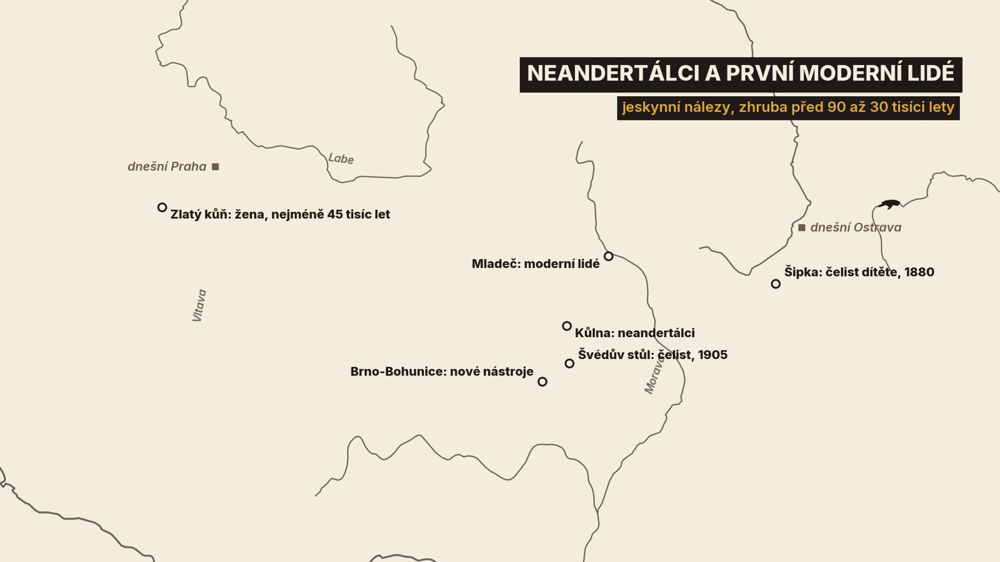

1. Soška z popela
13. července 1925 pracují archeologové na svahu pod Pálavou u Dolních Věstonic. Výzkum vede Karel Absolon z Moravského zemského muzea. V popelu velkého pravěkého ohniště se nejdřív objeví ulomený kus nohy z vypálené hlíny a o deset centimetrů dál zbytek postavy[14]. Složené dohromady dají sošku ženy dlouhou 111 milimetrů[13][14]. Dnes ji známe jako Věstonickou venuši.
Nad levou hýždí má soška otisk dětského prstu[13]. Někdo se jí dotkl, dokud byla hlína ještě měkká. Stará je kolem 30 tisíc let. Přesněji to říct nejde. Sošku samotnou datovat nelze a stáří se odhaduje podle nálezů v jejím okolí. Nejbližší datovaná kostra vychází na necelých 30 až 31 tisíc let[14]. Jinde proto najdete i o něco nižší čísla[13].
A přece je Věstonická venuše skoro na konci příběhu, který dnes projdeme. První lidé přišli na území dnešního Česka o stovky tisíc let dřív. Projdeme nejstarší nálezy od Prahy a z Brna, o které se dodnes vedou spory, neandertálce z moravských jeskyní, příchod lidí našeho druhu a lovce mamutů. Skončíme na konci poslední doby ledové.

Z celé té doby nemáme jediné napsané slovo. Proto budeme stále rozlišovat tři věci: co se našlo, jak se to datuje a co je už jen výklad.
Než se vydáme k nejstarším nálezům, řekneme si, jak se v pravěku vůbec měří čas.
2. Čas bez letopočtů
Starší doba kamenná, paleolit, spadá do období, kterému geologové říkají pleistocén. Podnebí se v něm opakovaně měnilo. V dobách ledových pokrývala naši krajinu otevřená sprašová step. V teplých dobách meziledových mohla teplota o 2 až 4 stupně přesáhnout dnešní průměr a většinu území zarostl les[1].
Nejméně dvakrát k nám dosáhl i pevninský ledovec ze severu, dávno před poslední dobou ledovou[5][21]. V Čechách zasáhl Šluknovsko a Frýdlantsko[21]. Na severu Moravy a ve Slezsku pokryl Opavsko a Ostravsko a Moravskou bránou pronikl až k dnešnímu Novému Jičínu a Kopřivnici. Rozvodí mezi Odrou a Dunajem východně od Hranic ale nikdy nepřekonal[5]. V poslední době ledové se ledovec zastavil dál na severu, zhruba v dnešním středním Polsku. Chlad tehdy vyvrcholil dvakrát. Poprvé asi před 65 tisíci lety. Podruhé asi před 22 tisíci lety[2].

A jak se takové stáří měří? U mladších nálezů hlavně radiokarbonovou metodou, která vychází z rozpadu radioaktivního uhlíku[1]. Má to háček. Radiokarbonové roky nejsou roky kalendářní a musí se přepočítat, odborně kalibrovat. U lovců mamutů přidá dnešní kalibrace k původnímu údaji přes 4 tisíce let[15]. Starší přehledy počítaly se třemi až čtyřmi tisíci[1]. Proto v různých knihách najdete pro stejný nález různá čísla.
U nejstarších nalezišť radiokarbon nepomůže vůbec. Tam se stáří odhaduje z geologických vrstev, z pozůstatků zvířat, hlavně drobných hlodavců, a z měření magnetismu hornin[3]. Výsledkem není rok, ale rozpětí.
S tímto vědomím se podívejme na nejstarší stopy člověka u nás.
3. Nejstarší stopy: Přezletice a Stránská skála
Přezletice leží kousek za severovýchodním okrajem Prahy. Po druhé světové válce tu František Prošek našel první kamenné nástroje a archeologický výzkum pak trval až do roku 1990. Vedl ho Jan Fridrich z Archeologického ústavu v Praze[3][1].
Co se našlo? Podle výzkumníků tu bylo jezírko hluboké asi tři metry, ze kterého vyčnívaly bloky tvrdé horniny, buližníku. Našlo se tu 729 kusů štípaných kamenných nástrojů, většinou právě z buližníku, a rozbité zvířecí kosti se stopami řezání. Část kostí byla opálená. Patřily sedmatřiceti druhům savců, mezi nimi předchůdci mamuta, nosorožci, bizonovi a koni[3].
Jak je to staré? Spolehlivé přímé datum neexistuje. V Přezleticích se našel jeden druh hraboše, ale chybí jiný, který se ve střední Evropě objevuje až později. Z toho vychází stáří kolem 700 tisíc let. Měření magnetismu dalo 590 až 660 tisíc let, ale sami autoři výzkumu ho označují za nekorektní, protože vzorky nebyly odebrané kontrolovaně[3].
A výklad? Jan Fridrich popsal oválný val z kamenů, jílu a velkých kostí o rozměrech 4 krát 3 metry s malým ohništěm u vchodu a vyložil ho jako zbytek chaty[3]. Novější přehled paleolitu je opatrnější. Mluví jen o „možných půdorysech obydlí“ a připomíná, že metody, jak takové stavby u nejstarších nalezišť prokázat, se teprve rozvíjejí[1].
Přezletice mají ještě jeden háček. Výzkum tu začal poté, co se našel úlomek zubu, který byl nejdřív určen jako lidská stolička. Později se ukázalo, že patřil medvědovi[27]. A část zahraničních badatelů pochybuje i o samotných nástrojích. Buližník totiž puká i sám od sebe a přirozený úlomek se od opracovaného těžko pozná. Přiznával to i Jan Fridrich. Nizozemští archeologové Wil Roebroeks a Thijs van Kolfschoten v roce 1995 napsali, že na přezletických kamenech přesvědčivé stopy lidské práce nevidí[27]. České přehledy paleolitu s Přezleticemi dál počítají[1]. Spor není uzavřen.
Z podobně dávné doby je naleziště Stránská skála v Brně. Už na počátku 20. století tu Jan Woldřich popsal v jeskyni ohniště se zvířecími kostmi. Odborníci se o něm dlouho přeli. Paleontolog Rudolf Musil v roce 2006 napsal, že poslední výzkumy dávají Woldřichovi za pravdu a že jde o nejstarší ohniště ve střední Evropě[4]. O tak starých dokladech ohně se ale vedou spory. Novější přehled evropských nalezišť došel k závěru, že pravidelně začali lidé v Evropě oheň užívat až zhruba před 300 až 400 tisíci lety[23].
A jsou to vůbec nejstarší stopy? Jisté to není. Z Červeného kopce v Brně pochází otlučený valoun z vrstev starých možná 0,8 až 1,2 milionu let. Nelze ale vyloučit, že ho vytvarovala příroda[1].
Kdo ti lidé byli? Nebyli to lidé našeho druhu. Evropské populace té doby se dnes obvykle označují jako člověk heidelberský, i když ani toto pojmenování není ustálené[1].
Od prvních stop uplynou statisíce let, než se na Moravě objeví lidé, které známe i podle kostí: neandertálci.
4. Neandertálci v moravských jeskyních
Neandertálci byli evropská, přesněji eurasijská podoba člověka. Na Moravě po nich zůstaly kosti ve třech jeskyních: v Šipce, ve Švédově stole a v Kůlně. Vždy jde jen o malé zlomky[1].
První nález přišel v roce 1880. V jeskyni Šipka u Štramberka našel Karel Jaroslav Maška, profesor reálky v Novém Jičíně, kus dolní čelisti neandertálského dítěte[7][24]. Originál dnes neexistuje. V roce 1945 shořel při požáru zámku v Mikulově[7].
V roce 1905 vyzvedl student geologie Karel Kubasek v jeskyni Švédův stůl u Ochozu část lidské dolní čelisti. O rok později ji jako neandertálskou popsal Anton Rzehak[6].

Nejvíc toho ale víme z jeskyně Kůlna u Sloupu v Moravském krasu. Je to tunel dlouhý 92 metrů. V letech 1961 až 1976 ho zkoumal Karel Valoch a rozlišil řadu vrstev nad sebou. V jedné z nich, označené 7a, ležely kamenné nástroje neandertálců spolu s jejich kostmi[1].
Jak jsou staré? Tady narážíme na hranici radiokarbonové metody. Data z této vrstvy jsou podle odborníků jen minimální, skutečné stáří bude vyšší. Přehled moravského paleolitu klade neandertálské osídlení jeskyní zhruba do doby před 90 až 45 tisíci lety. Jiná metoda, měření na zubech z téže vrstvy, dala stáří asi 50 tisíc let s nejistotou pěti tisíc let[22]. Kdy přesně neandertálci z Moravy zmizeli, datovat neumíme[1].
Co o nich nálezy říkají? V Kůlně pochází téměř 80 procent kamene na nástroje z blízkého okolí. Neandertálci se tedy pohybovali spíš v omezeném území. V horních vrstvách lovili nejčastěji mamuta a soba[1].
Někdy před 45 tisíci lety se ve střední Evropě objevují další lidé. Tentokrát už lidé našeho druhu.
5. Lidé našeho druhu: Zlatý kůň a Mladeč
V roce 1950 se v Koněpruských jeskyních pod vrchem Zlatý kůň našla téměř úplná lidská lebka[18]. Uložena je v Národním muzeu v Praze[8]. Radiokarbonová data z ní vycházela nesourodě, některá jen kolem 15 tisíc let[18]. Ještě přehled z roku 2009 proto nález řadí až na konec doby ledové[1].
V roce 2021 přišel obrat. Mezinárodní tým s badateli z Národního muzea a z Přírodovědecké fakulty v Praze přečetl z lebky genom. V kosti našel i DNA krávy. Lebka byla kdysi zpevněna lepidlem z hovězí suroviny a to radiokarbonová data omladilo[18].
Stáří proto vědci odhadli jinak. Lidé mimo Afriku nesou v genomu trochu neandertálské DNA. Čím déle od křížení uplynulo, tím kratší jsou její úseky. Žena ze Zlatého koně je měla delší než 45 tisíc let starý člověk ze sibiřského naleziště Usť-Išim. Je tedy stará nejméně 45 tisíc let. Žila asi 70 až 80 generací po posledním křížení s neandertálci[18]. Je to odhad z genetiky, ne přímé datum.
Novější práce ukázala, že tato žena byla vzdáleně příbuzná s lidmi z jeskyně u německého Ranisu, jejichž kosti jsou staré zhruba 45 tisíc let. Jejich genomy patří k nejstarším dosud přečteným genomům lidí našeho druhu. Mezi pozdějšími Evropany ale tato skupina potomky nemá[19][18].
Ze stejné doby, zhruba před 45 až 35 tisíci lety, známe z Moravy nové způsoby výroby kamenných nástrojů. Jeden dostal jméno bohunicien podle Brna-Bohunic[1]. Kdo ty nástroje vyráběl, jisté není. Kosti, které by to prokázaly, se u nich nenašly[1].
Jistější půdu máme v Mladečských jeskyních na Olomoucku. Objevily se při těžbě vápence v roce 1828 a našlo se v nich přes sto lidských kostí několika jedinců, kostěné hroty a provrtané zvířecí zuby[10][1]. V roce 2005 se ve Vídni podařilo lidské zuby z Mladče datovat přímo. Vyšlo zhruba 31 tisíc radiokarbonových let[20][9]. Po přepočtu na kalendářní roky to podle staršího odhadu odpovídá době asi před 35 tisíci lety[1]. Tehdy to byl nejstarší přímo datovaný větší soubor koster moderních lidí v Evropě: muži, ženy i nedospělí[20].
Lidé z Mladče patří ke kultuře zvané aurignacien. Po ní přichází na Moravě doba, která ji proslavila ve světě: doba lovců mamutů.
6. Lovci mamutů
Archeologové této kultuře říkají gravettien a její starší fázi pavlovien, podle Pavlova pod Pálavou[1]. Nejhustší osídlení pod Pálavou spadá do doby zhruba před 31 až 29,5 tisíce let[2].
Sídliště se zachovala pod mocnou vrstvou spraše. Kromě Dolních Věstonic a Pavlova je to hlavně Předmostí u Přerova a Petřkovice v Ostravě[1]. Obydlí mívala v průměru kolem pěti metrů. Jejich podobu, tedy kostru z dřevěných tyčí krytou kůžemi, archeologové odvozují ze staveb národů, které dodnes žijí v podobně chladném podnebí. Je to rekonstrukce, ne nález[2].
A lovili vůbec mamuty? Jejich kosti leží ve velkých skládkách ve vlhkých úžlabinách vedle sídlišť. Takové skládky mohl vytvořit člověk dlouhodobým lovem. Stejně tak ale mohly vzniknout přirozeně a lidé mohli brát kosti, kly a maso z uhynulých zvířat. V této základní otázce jasno není[1]. Přímo v sídlištích naopak převažují kosti menších zvířat: zajíců, lišek, vlků, sobů a ptáků[1]. Otisky uzlíků v hrudkách vypálené hlíny z Pavlova ukazují, že lidé znali sítě, které se k lovu drobné zvěře hodí[1].
V Předmostí, na jednom z největších nalezišť svého druhu v Evropě[11], učinil v roce 1894 Karel Jaroslav Maška, tehdy už ředitel reálky v Telči[24], mimořádný objev: nahromaděné lidské kostry. Sám napsal, že „objevené zbytky přináležejí alespoň 20 osobám“ – osmi dospělým a dvanácti mladým, většinou dětem[1]. Podle Mašky hrob ohraničovaly dvě mamutí lopatky[1]. S pozdějšími nálezy stoupl nejmenší počet jedinců na 25[1]. Maška soudil, že všichni zemřeli při jedné pohromě a byli pohřbeni najednou. Novější rozbor jeho deníků se kloní k tomu, že se mrtví na jedno místo ukládali postupně[25]. Rozhodnuto to není.
objevené zbytky přináležejí alespoň 20 osobám
Většinu koster z Předmostí už nikdo nezměří. V roce 1945 shořely na zámku v Mikulově a zachovalo se jen několik kostí[25]. Zůstaly popisy, odlitky, fotografie a kresby[1][2].
Pod Pálavou ale lovci mamutů zanechali i něco, co bychom v době ledové nečekali: vypálenou hlínu a otisky tkanin.
7. Hlína, vlákna a hroby pod Pálavou
Vraťme se k Věstonické venuši. Karel Absolon zahájil v Dolních Věstonicích soustavný výzkum v roce 1924 a hned další léto přišel slavný nález[14]. Sám o tom napsal, že ten den „je zapsán zlatým písmem v historii Věstonic“[2].
Den 13. VII. 1925 je zapsán zlatým písmem v historii Věstonic
Soška má na temeni čtyři vpichy, místo očí dvě rýhy a spodní část nohou jí chybí[14]. Z čeho je? Absolon se domníval, že ze směsi hlíny s drcenými spálenými kostmi a mamutovinou. Nedestruktivní snímkování mikrotomografem, zveřejněné v roce 2024, to nepotvrdilo. Uvnitř žádné kosti ani mamutovina nejsou. Hmotu tvoří spraš s přirozenou příměsí kamínků a drobných zkamenělin a postava byla vytvarována z jediného kusu[14].
Venuše není sama. Pod Pálavou se našel celý soubor dalších figurek zvířat i lidí z pálené hlíny. Ležely kolem ohnišť v chatách, tam, kde se vypalovaly. Stačila k tomu teplota 500 až 700 stupňů, které běžné ohniště dosáhne[2]. Jsou to jedny z nejstarších známých výrobků z pálené hlíny na světě[1][13]. Nádoby z ní ale lovci mamutů nedělali. Keramické hrnce přijdou až o mnoho tisíc let později se zemědělci[2].
Vypálená hlína zachovala i to, co by jinak shnilo: otisky prstů dospělých i dětí, zvířecí chlupy a také křížící se vlákna, kroucené šňůry a uzlíky. Hrudky jsou nanejvýš velké jako nehet, takže nevíme, k čemu přesně tkaniny sloužily[2].
A pak jsou tu hroby. V roce 1986 odkryli archeologové při záchranném výzkumu hrob tří mladých lidí[2]. Lebky měli pokryté červeným barvivem. Jedinec uprostřed měl chorobně změněnou kostru, možná od narození, a jeho pohlaví se podle kostí určit nepodařilo. Až rozbor DNA v roce 2016 ukázal, že všichni tři byli muži. Dva z nich měli stejnou mateřskou linii, takže mohli být bratři[15]. Proč zemřeli, nevíme[15]. Radiokarbonové datum hrobu odpovídá po přepočtu době zhruba před 31 tisíci lety[15].
Velká sídliště pod Pálavou ale netrvala věčně. Podnebí se znovu ochlazovalo.
8. Konec doby ledové
Zhruba před 27 až 26 tisíci lety začali lovci svahy Pálavy opouštět a přesouvali se k Dunaji, k Váhu a dál na východ. O několik tisíc let později postoupil ledovec do středního Polska. Dřeviny ustoupily tundře, stáda odešla a lovci je následovali[2]. Přes opuštěná tábořiště navál vítr několik metrů spraše[2].
Lidé se ve větším počtu vrátili až s oteplováním. Kultura, které říkáme magdalénien, přišla podle převládajícího výkladu od západu a většina jejích dat od nás spadá do doby zhruba před 15 tisíci lety[1]. Na Moravě osídlila hlavně jeskyně Moravského krasu, v Čechách Český kras. Tam leží velké sídliště Hostim nad Berounkou[1].
Nejznámější je jeskyně Pekárna u Mokré. Z ní pocházejí dvě koňská žebra s rytinami. Na prvním, které našli Karel Absolon a Rudolf Czižek, jsou bojující bizoni. Druhé, s pasoucími se koňmi, objevil před jeskyní v roce 1963 Bohuslav Klíma[16].
Podnebí se mezitím měnilo. Pak přišla dvě výrazná oteplení. První zhruba před 15 tisíci lety. Druhé asi o patnáct set let později. Krajinou se šířila světlá tajga s borovicí a břízou[1]. V horních vrstvách Kůlny už místo soba najdeme jelena, losa, divoké prase a bobra[1].
Lovci a sběrači tu zůstali i v lese. Této době říkáme střední doba kamenná, mezolit. Ze skalních převisů v severních Čechách máme její data v rozpětí zhruba před 12 až 7,5 tisíce let. Končí ve chvíli, kdy ve středních Čechách nastupují první zemědělci[1].
A právě tady, na prahu zemědělství, dnešní díl končí. Zbývá shrnout, co si z něj odnést.
9. Co si odnést
Z nejstarší doby u nás nemáme žádné nesporné lidské kosti, jen kamenné nástroje, a i o těch se část badatelů pře[27]. V Přezleticích u Prahy jsou staré kolem 700 tisíc let a toto stáří je odhad, ne přesné datum[3].
Neandertálce známe z moravských jeskyní Šipka, Švédův stůl a Kůlna[1]. Lidé našeho druhu tu žili nejméně před 45 tisíci lety, jak ukázal genom ženy ze Zlatého koně[18].
Lovci mamutů po sobě před zhruba 30 tisíci lety zanechali sídliště, hroby, figurky z pálené hlíny a otisky tkanin[1][2]. A u čísel z pravěku vždy záleží na metodě a na přepočtu[1].
Mnohé z toho si můžete prohlédnout. Nálezy z Dolních Věstonic má Moravské zemské muzeum v Brně[13], přímo na nalezišti stojí Archeopark Pavlov[2][12] a v Předmostí Památník lovců mamutů[11].
A co nevíme? Potkali se na Moravě lidé našeho druhu s posledními neandertálci? A co se stalo s lidmi ze Zlatého koně, že po nich v pozdějších Evropanech nezůstala stopa?[19][1] Na to zatím nikdo odpověď nemá.
Příště se podíváme na lidi, kteří krajinu začali měnit: na první zemědělce.


.JPG){kind=link}


.jpg){kind=link}